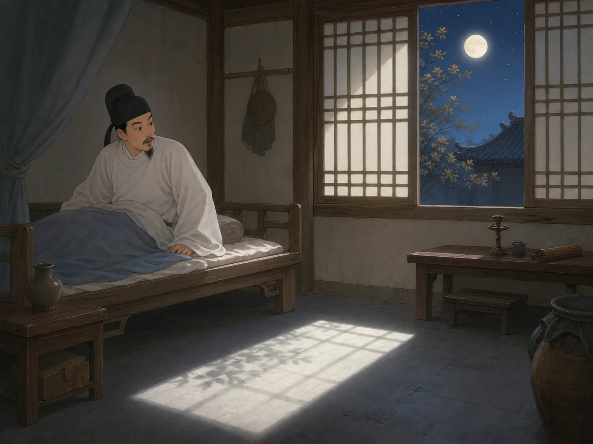

静夜思：很多小孩都会念
Quiet Night Thought: A Poem Many Children Know
Page 1
二十个字，很多孩子一下就记住了
Twenty Characters, and Many Children Remember Them Right Away
《静夜思》只有二十个字：
床前明月光，疑是地上霜。举头望明月，低头思故乡。
字不难，画面也很清楚。一个人半夜醒来，看见地上一片白光，先以为是霜，仔细一看，原来是月光。
所以很多中国孩子刚开始学诗的时候，很早就会读到它。不少外国孩子学中文时，也常常先碰到这一首。
Quiet Night Thought has only twenty Chinese characters:
Bright moonlight before my bed. I wonder if it is frost on the ground. I lift my head and look at the bright moon. I lower my head and think of home.
The words are not hard, and the picture is easy to see. Someone wakes in the night, notices a patch of white on the floor, thinks it might be frost, and then realizes it is moonlight.
That is why many Chinese children meet this poem very early. Many children outside China meet it early too when they begin learning Chinese.
Page 2
李白醒来时，月光已经走进了房间
When A famous Chinese poet known for moonlight, travel, and bold imagination. Woke Up, Moonlight Had Already Slipped into the Room

The little inn is quiet. Moonlight comes through the window and falls on the floor beside the bed.
传说李白写这首诗的时候，正在外面旅行。那是一个安静的秋夜，他住在一间小旅舍里，半夜忽然醒了。
月光从窗户照进来，刚好落在床前。人在半梦半醒的时候，很容易看错，于是他先把那片白光当成了地上的霜。
等他清醒一点，再抬头一看，才发现那不是霜，是月亮。
When A famous Chinese poet known for moonlight, travel, and bold imagination. wrote this poem, he was away from home and traveling. It was a quiet autumn night, and he was staying in a small inn when he suddenly woke up.
Moonlight came through the window and landed right in front of his bed. When a person is half asleep, it is easy to mistake one thing for another, so at first he thought the white patch on the floor was frost.
Then he looked up more carefully and saw the truth. It was not frost. It was the moon.
Page 3
一抬头看月亮，一低头就想起家
One Look Up at the Moon, and Home Comes Back
A traveler looks up at the moon, and family at home may be looking at it too. They are apart, yet the same moon gently links them.
这首诗最厉害的地方，不是它讲了多少事，而是它一下就抓住了一种很多人都懂的感觉。
人离家远了，白天也许还能忙着赶路、说话、做事。可到了晚上，四周安静下来，月亮一出来，心里就忽然软了一下。
李白只写了“举头”和“低头”两个动作，可读的人一下就明白了。刚才还在看天，下一刻，心已经回到家里去了。
The special power of this poem is not that it tells many events. It catches one feeling that many people know.
When you are far from home, the daytime can keep you busy. You travel, talk, and do what needs to be done. But at night, when everything grows quiet and the moon appears, your heart can suddenly soften.
Li Bai uses only two simple actions: lift your head and lower your head. Yet many readers understand the whole feeling at once. A moment ago your eyes were on the sky. The next moment your thoughts are already back at home.
Page 4
后来，月亮慢慢成了思念的语言
Later, the Moon Became a Language of Missing Someone
后来，很多中国诗里都喜欢写月亮，也喜欢借月亮来说思念。因为月亮常常挂在高高的天上，不管你在近处还是远方，都可能正在看同一轮。
所以《静夜思》虽然很短，却像给很多后来的诗开了一扇门。你一读到月亮，就会想到远方；一想到远方，也常常会想到家。
Later, many Chinese poems used the moon when they wanted to speak about missing someone. The moon hangs high above everyone, so people in different places can still look at the same round light.
That is one reason this poem matters so much. It is short, but it opened a door for many later poems. When people read about moonlight, they often think of distance, and then of home.
小结
In Summary
《静夜思》只有二十个字，却写出了很大的感觉。李白在旅舍里看到月光，先看错成霜，后来抬头看月亮，低头想起了家。
也正因为它短、清楚、又真像每个人都可能有过的一刻，所以它一代一代被记了下来。
Quiet Night Thought has only twenty characters, but it holds a very large feeling. Li Bai sees moonlight in an inn, mistakes it for frost, looks up at the moon, and then thinks of home.
Because it is short, clear, and so close to a real human moment, people have remembered it for generation after generation.